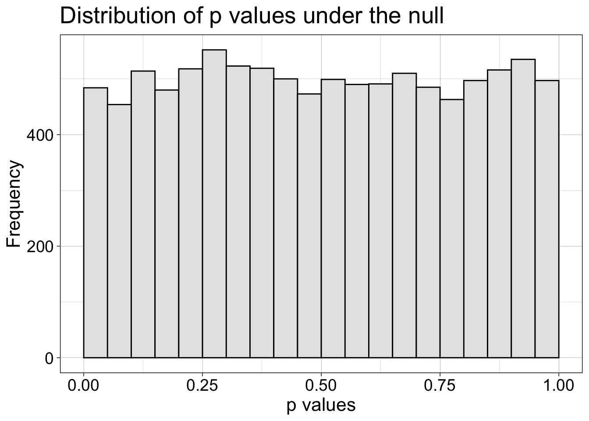
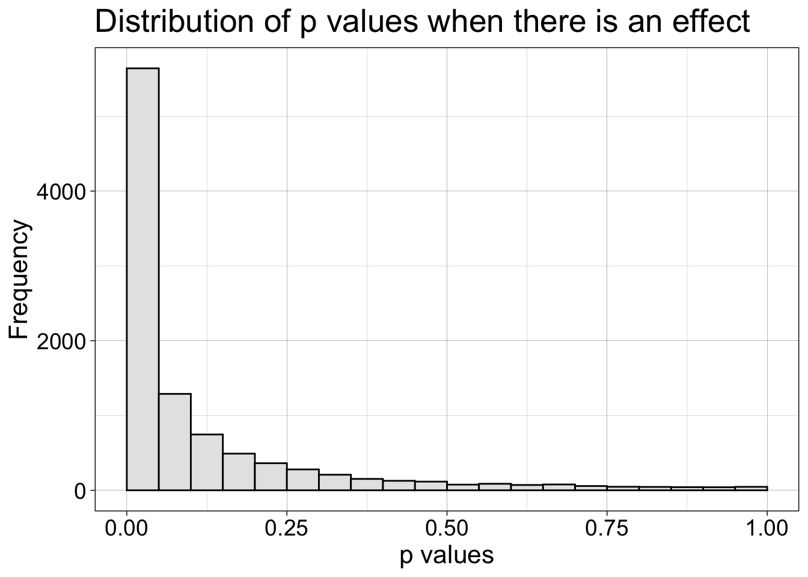
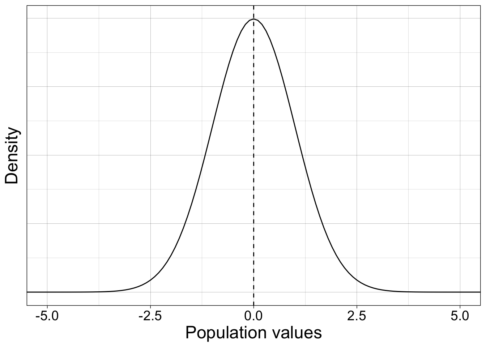
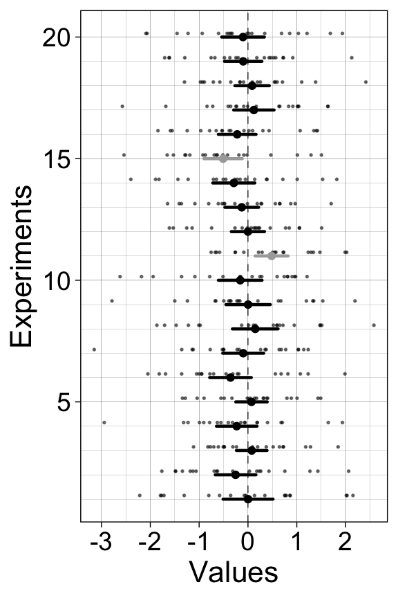
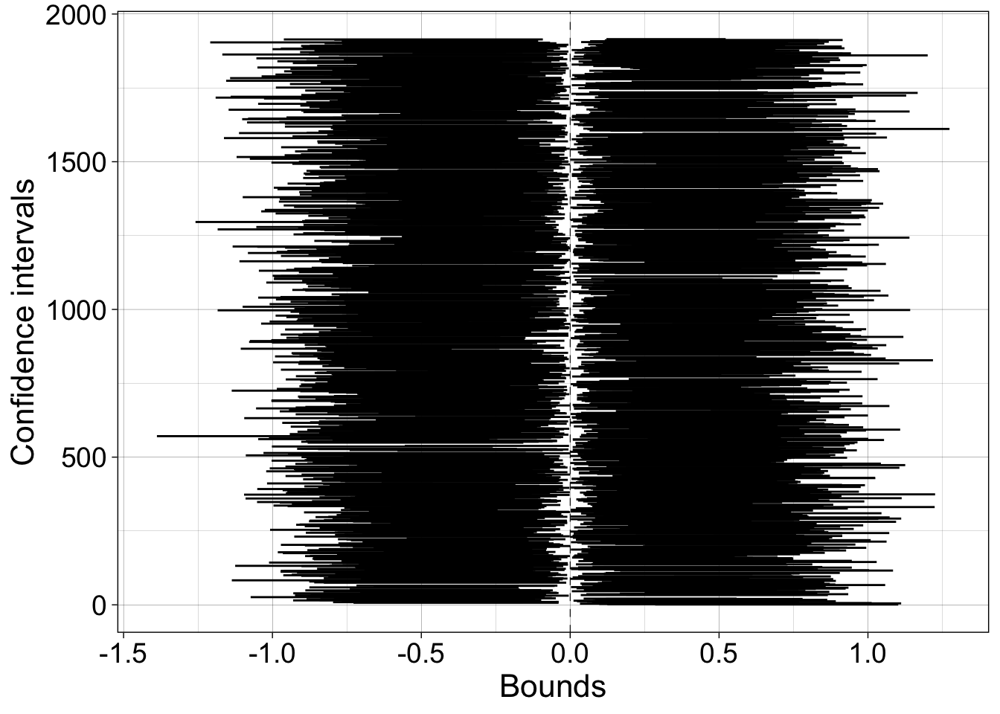
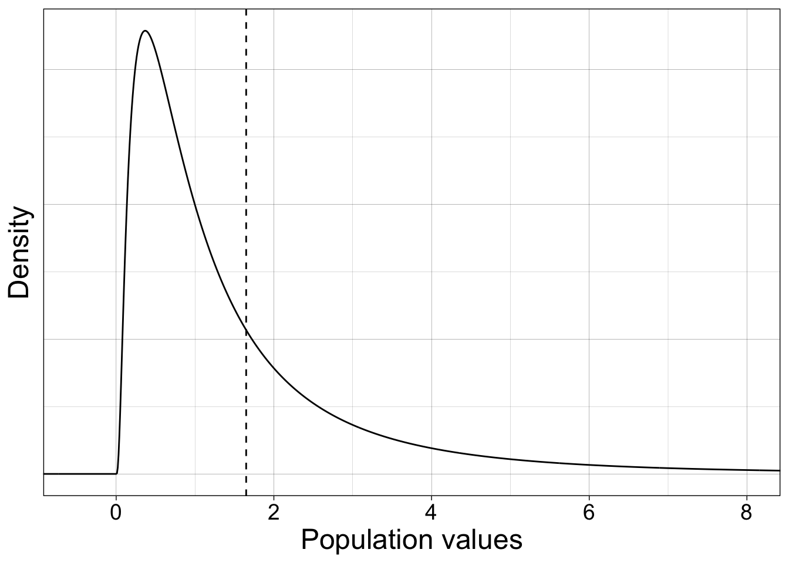
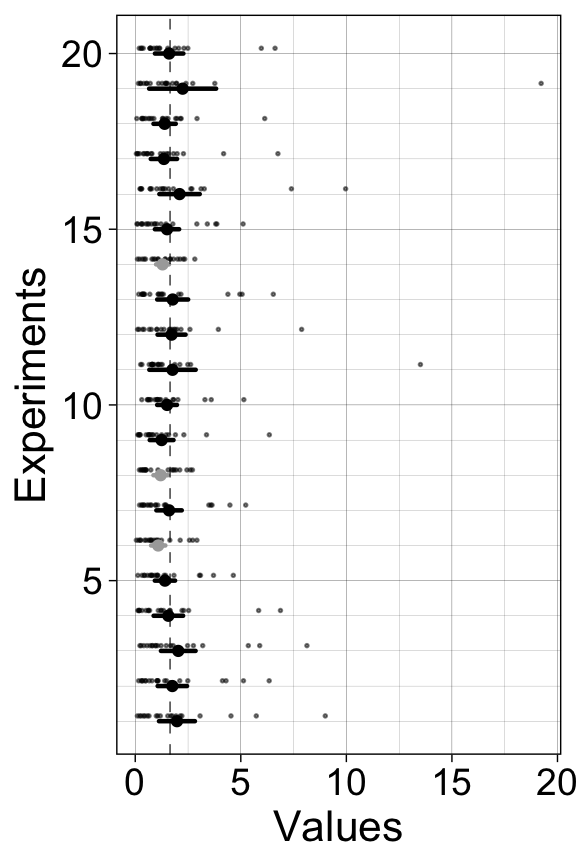
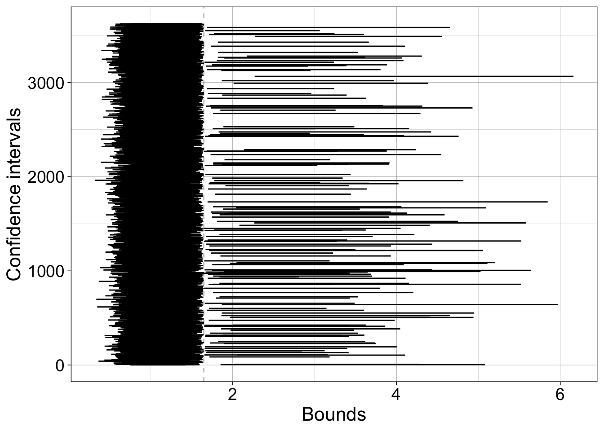
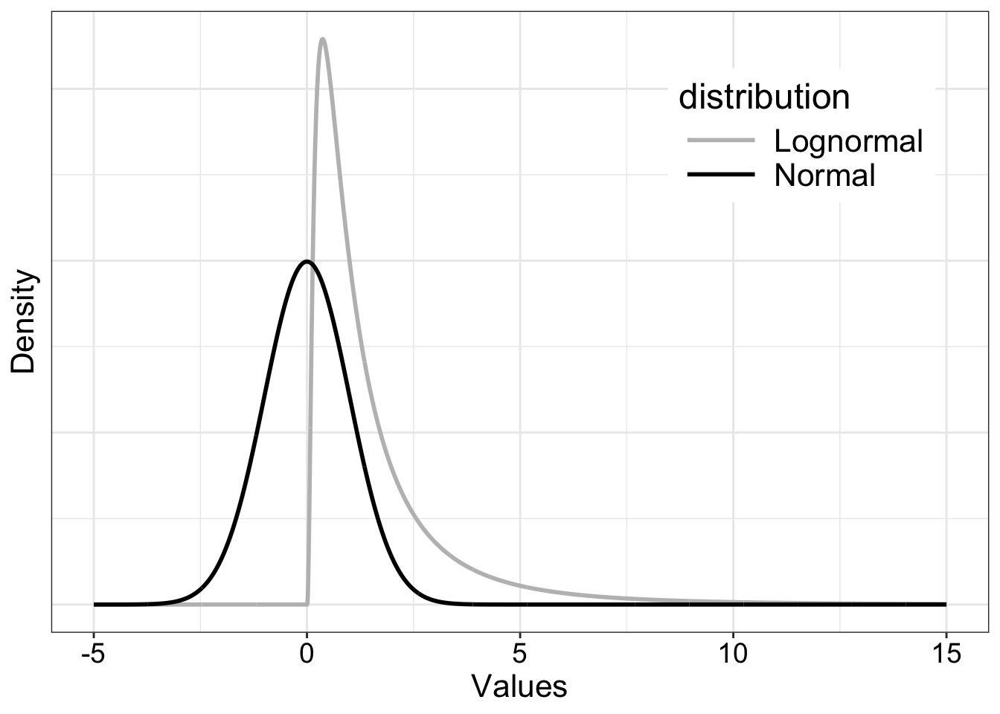

6 Confidence Intervals
6.1 Chapter preparation
In this chapter, we need a few different datasets and source files, so we will introduce them as we need them.
6.1.1 Organising your files and project for the chapter
Before we can get started, you need to organise your files and project for the chapter, so your working directory is in order.
In your folder for statistics and research design
Stats_Research_Design, create a new folder called07_confidence_intervals.We are working with a few data sets and source files in this chapter, so please save the following zip file containing all the files you need: Chapter 07 Files. Right click the link and select “save link as”, or clicking the link will save the file to your Downloads. Extra the files and save the two folders (
dataandcode) in your07_confidence_intervalsfolder. All the code in this chapter assumes these two folders with all their files inside are in the same folder as your Quarto document.Create an R Project for
07_confidence_intervalsas an existing directory for your chapter folder. This should now be your working directory.Create a new Quarto document and give it a sensible title describing the chapter, such as
07 Confidence Intervals. Save the file in your07_confidence_intervalsfolder.
You are now ready to start working on the chapter!
6.2 Dependencies
6.3 Rand Wilcox’s code
When I mention code from Rand Wilcox, it is available in a giant text file (see Wilcox’s website for the most recent version of the code). You access the functions by using the source() function:
For convenience, most of the functions necessary for this course are available in the smaller file Rallfun-v35-light.txt. In this version, I’ve removed the option SEED=TRUE, which allows users to set the random seed inside the function, which means you get the same results every time you use the function. With SEED=FALSE, different random bootstrap samples are returned each time the function is called. It is better practice to set the seed in your R notebook, for reproducibility and transparency. So be careful to use SEED=FALSE when using functions from Rallfun-v35.txt.
In some of the notebooks, I’ve extracted one or a few functions so you can source a smaller file. This prevents your environment from being cluttered with functions you don’t need. Creating a well documented R package is a lot of work, so some statisticians don’t spend the time required. But that means their code is less accessible.
Some of the functions are also available in the WRS2 package available on CRAN. For correlation analyses, I have created an R package called bootcorci. To quantify how distributions differ using quantile estimation, I have created the rogme R package.
6.4 P value sampling distribution
Consider normality only.
6.4.1 No effect
How are p values distributed under the null?
set.seed(21)
alpha.val <- 0.05
nsim <- 10000
n <- 20
p.sampdist.h0 <- vector(mode = "numeric", length = nsim)
p.sampdist.h1 <- vector(mode = "numeric", length = nsim)
es <- 0.5 # effect size to add to each sample
# get sampling distribution of t values
for(S in 1:nsim){
p.sampdist.h0[S] <- t.test(rnorm(n))$p.value
p.sampdist.h1[S] <- t.test(rnorm(n) + es)$p.value
}
# out <- density(p.sampdist.h0)
# samp.dens <- tibble(x = out$x,
# y = out$y)
# ggplot(df, aes(x = x, y = y)) + theme_linedraw() +
df <- tibble(x = p.sampdist.h0)
ggplot(df, aes(x = x)) + theme_linedraw() +
geom_histogram(breaks = seq(0, 1, 0.05), fill="grey90", colour = "black") +
theme(axis.text = element_text(size = 14),
axis.title = element_text(size = 16),
plot.title = element_text(size=20)) +
ggtitle(paste0("Distribution of p values under the null")) +
labs(x = "p values", y = "Frequency") +
coord_cartesian(xlim = c(0, 1))
6.4.2 Effect
Now we look at the distribution of p values when there is a 0.5 effect.
df <- tibble(x = p.sampdist.h1)
ggplot(df, aes(x = x)) + theme_linedraw() +
geom_histogram(breaks = seq(0, 1, 0.05), fill="grey90", colour = "black") +
theme(axis.text = element_text(size = 14),
axis.title = element_text(size = 16),
plot.title = element_text(size=20)) +
ggtitle(paste0("Distribution of p values when there is an effect")) +
labs(x = "p values", y = "Frequency") +
coord_cartesian(xlim = c(0, 1))
6.5 Confidence intervals: sampling from normal distribution
We sample from a standard normal population (mean 0 and standard deviation 1).
pop.m <- 0 # population mean
pop.sd <- 1 # population sd
x <- seq(-6, 6, 0.1)
y <- dnorm(x, pop.m, pop.sd)
df <- tibble(x = x,
y = y)
ggplot(df, aes(x = x, y = y)) + theme_linedraw() +
geom_line() +
geom_vline(xintercept = pop.m, linetype = "dashed") +
theme(axis.text = element_text(size = 14),
axis.title = element_text(size = 18),
axis.text.y = element_blank(),
axis.ticks.y = element_blank()) +
xlab("Population values") +
ylab("Density") +
coord_cartesian(xlim = c(-5, 5))
6.5.1 20 experiments - 20 confidence intervals
We perform many experiments, and for each experiment we compute a parametric one-sample confidence interval, which we plot as horizontal lines.
set.seed(666) # set seed of random number generator
alpha.val <- .1 # 90% confidence interval
nexp <- 20 # number of experiments
n <- 20 # sample size in each experiment
#declare matrices to save results
mean.all <- vector(mode = "numeric", length = nexp) # save sample means
ci.ttest <- matrix(NA, nrow = nexp, ncol = 2) # save confidence intervals
ci.ttest.in <- vector(mode = "numeric", length = nexp) # save coverage
samp.all <- matrix(NA, nrow = nexp, ncol = n) # save samples
for(E in 1:nexp){
# sample data
samp <- rnorm(n, pop.m, pop.sd)
mean.all[E] <- mean(samp) # save mean of each sample
samp.all[E,] <- samp # save sample
ci.ttest[E,] <- t.test(samp, conf.level = 1-alpha.val)$conf.int
# check if the confidence interval includes the population value
if(ci.ttest[E,1] > pop.m || ci.ttest[E,2] < pop.m){
ci.ttest.in[E] <- 0
} else{
ci.ttest.in[E] <- 1
}
}6.5.1.1 Illustrate results
# confidence intervals
df <- tibble(x = as.vector(ci.ttest),
y = rep(1:nexp,2),
gr = factor(rep(1:nexp,2)),
inout = factor(rep(ci.ttest.in,2))
)
# sample means
df2 <- tibble(x = mean.all,
y = 1:nexp,
inout = factor(ci.ttest.in))
# samples
df3 <- tibble(x = as.vector(samp.all),
y = rep(1:nexp + 0.15, n)
)
ggplot(df, aes(x = x, y = y)) + theme_linedraw() +
geom_line(aes(group = gr, colour = inout), linewidth = 0.8, lineend = "round", show.legend = FALSE) + # CI
geom_point(data = df3, size=0.3, alpha = 0.5) + # samples
geom_point(data = df2, aes(colour = inout), show.legend = FALSE) + # sample means
scale_colour_manual(values = c("darkgrey", "black")) +
geom_vline(xintercept = pop.m, colour = "black", linetype = "dashed", linewidth = 0.2) +
labs(x = "Values", y = "Experiments") +
theme(axis.title = element_text(size = 16),
axis.text = element_text(size = 14)) +
scale_y_continuous(minor_breaks = 1:20)
6.5.2 20,000 experiments - 20,000 confidence intervals
Now we do 20,000 experiments, and check the long term coverage of the confidence intervals.
set.seed(21) # set seed of random number generator
alpha.val <- .1 # 90% confidence interval
nexp <- 20000 # number of experiments
n <- 20 # sample size in each experiment
#declare matrices to save results
ci.ttest <- matrix(NA, nrow = nexp, ncol = 2)
ci.ttest.in <- vector(mode = "numeric", length = nexp)
mean.all <- vector(mode = "numeric", length = nexp)
for(E in 1:nexp){
# sample data
samp <- rnorm(n, pop.m, pop.sd)
# mean.all[E] <- mean(samp) # sample means
ci.ttest[E,] <- t.test(samp, conf.level = 1-alpha.val)$conf.int
# check if the confidence interval includes the population value
if(ci.ttest[E,1] > pop.m || ci.ttest[E,2] < pop.m){
ci.ttest.in[E] <- 0
} else{
ci.ttest.in[E] <- 1
}
}Confidence interval coverage = 90.4%.
6.5.2.1 Illustrate CIs excluding population
ci <- ci.ttest[ci.ttest.in==0, ]
todo <- sum(ci.ttest.in==0)
df <- tibble(x = as.vector(ci),
y = rep(1:todo, 2),
gr = factor(rep(1:todo,2))
)
ggplot(df, aes(x = x, y = y)) + theme_linedraw() +
geom_line(aes(group = gr)) +
geom_vline(xintercept = pop.m, linetype = "dashed", linewidth = 0.2) +
labs(x = "Bounds", y = "Confidence intervals") +
theme(axis.title = element_text(size = 16),
axis.text = element_text(size = 14))
Proportion of confidence intervals shifted to the left of the population value = 4.9%.
Proportion of confidence intervals shifted to the right of the population value = 4.7%.
6.6 Confidence intervals: sampling from lognormal distribution
Now we sample from a lognormal population, which is an example of a skewed distribution.
logpop.m <- exp(pop.m + 0.5*pop.sd^2) # population mean
# mean(rlnorm(20000)) # check that the population value is correct
x <- seq(-2, 10, 0.01)
y <- dlnorm(x, pop.m, pop.sd)
df <- tibble(x = x,
y = y)
ggplot(df, aes(x = x, y = y)) + theme_linedraw() +
geom_line() +
geom_vline(xintercept = logpop.m, linetype = "dashed") +
theme(axis.text = element_text(size = 14),
axis.title = element_text(size = 18),
axis.text.y = element_blank(),
axis.ticks.y = element_blank()) +
xlab("Population values") +
ylab("Density") +
coord_cartesian(xlim = c(-0.5, 8))
6.6.1 20 experiments - 20 confidence intervals
We perform many experiments, and for each experiment we compute a confidence interval, which we plot as horizontal lines.
set.seed(21) # set seed of random number generator
alpha.val <- .1 # 90% confidence interval
nexp <- 20 # number of experiments
n <- 20 # sample size in each experiment
#declare matrices to save results
mean.all <- vector(mode = "numeric", length = nexp)
ci.ttest <- matrix(NA, nrow = nexp, ncol = 2)
ci.ttest.in <- vector(mode = "numeric", length = nexp)
samp.all <- matrix(NA, nrow = nexp, ncol = n)
for(E in 1:nexp){
# sample data + bootstrap + compute mean of each bootstrap sample
samp <- rlnorm(n, pop.m, pop.sd)
samp.all[E,] <- samp
mean.all[E] <- mean(samp) # sample means
ci.ttest[E,] <- t.test(samp, conf.level = 1-alpha.val)$conf.int
# check if the confidence interval includes the population value
if(ci.ttest[E,1] > logpop.m || ci.ttest[E,2] < logpop.m){
ci.ttest.in[E] <- 0
} else{
ci.ttest.in[E] <- 1
}
}6.6.1.1 Illustrate results
# confidence intervals
df <- tibble(x = as.vector(ci.ttest),
y = rep(1:nexp,2),
gr = factor(rep(1:nexp,2)),
inout = factor(rep(ci.ttest.in,2))
)
# sample means
df2 <- tibble(x = mean.all,
y = 1:nexp,
inout = factor(ci.ttest.in))
# samples
df3 <- tibble(x = as.vector(samp.all),
y = rep(1:nexp + 0.15, n)
)
ggplot(df, aes(x = x, y = y)) + theme_linedraw() +
geom_line(aes(group = gr, colour = inout), linewidth = 0.8, lineend = "round", show.legend = FALSE) + # CI
geom_point(data = df3, size=0.3, alpha = 0.5) + # samples
geom_point(data = df2, aes(colour = inout), show.legend = FALSE) + # sample means
scale_colour_manual(values = c("darkgrey", "black")) +
geom_vline(xintercept = logpop.m, colour = "black", linetype = "dashed", linewidth = 0.2) +
labs(x = "Values", y = "Experiments") +
theme(axis.title = element_text(size = 16),
axis.text = element_text(size = 14)) +
scale_y_continuous(minor_breaks = 1:20)
6.6.1.2 Illustrate results: bootstrap
6.6.2 20,000 experiments - 20,000 confidence intervals
Now we do 20,000 experiments, and check the long term coverage of the confidence intervals.
set.seed(21) # set seed of random number generator
alpha.val <- .1 # 90% confidence interval
nexp <- 20000 # number of experiments
n <- 20 # sample size in each experiment
#declare matrices to save results
ci.ttest <- matrix(NA, nrow = nexp, ncol = 2)
ci.ttest.in <- vector(mode = "numeric", length = nexp)
mean.all <- vector(mode = "numeric", length = nexp)
for(E in 1:nexp){
# sample data
samp <- rlnorm(n, pop.m, pop.sd)
# mean.all[E] <- mean(samp) # sample means
ci.ttest[E,] <- t.test(samp, conf.level = 1-alpha.val)$conf.int
# check if the confidence interval includes the population value
if(ci.ttest[E,1] > logpop.m || ci.ttest[E,2] < logpop.m){
ci.ttest.in[E] <- 0
} else{
ci.ttest.in[E] <- 1
}
}Confidence interval coverage = 81.9%.
6.6.2.1 Illustrate CIs excluding population
ci <- ci.ttest[ci.ttest.in==0, ]
todo <- sum(ci.ttest.in==0)
df <- tibble(x = as.vector(ci),
y = rep(1:todo, 2),
gr = factor(rep(1:todo,2))
)
ggplot(df, aes(x = x, y = y)) + theme_linedraw() +
geom_line(aes(group = gr)) +
geom_vline(xintercept = logpop.m, linetype = "dashed", linewidth = 0.2) +
labs(x = "Bounds", y = "Confidence intervals") +
theme(axis.title = element_text(size = 16),
axis.text = element_text(size = 14))
Proportion of confidence intervals shifted to the left of the population value = 17.4%.
Proportion of confidence intervals shifted to the right of the population value = 0.7%.
6.7 Confidence interval coverage simulation: mean and 20% trimmed mean
Here is another example of a simple simulation to check the probability coverage of a confidence interval method. The simulation has 10,000 iterations, which is often recommended or expected in the literature. For more complex applications, time might be a constraint.
The sample size is 30, which seems reasonably high for a psychology experiment. A more systematic simulation should include sample size as a parameter.
The populations are normal and lognormal and are generated outside the simulation loop. An alternative is to generate the random numbers directly inside the loop by using samp <- rlnorm(nsamp) and samp <- rnorm(nsamp). The lognormal distribution is one of many skewed mathematical distributions. It serves to illustrate what can happen when sampling from skewed distributions in general. Other shapes could be used to, if some domain specific information is available. For instance, ex-Gaussian and shifted log-normal distributions do a good job at capturing the shape of reaction time distributions.
6.7.1 Illustrate populations
x <- seq(-5, 15, 0.01)
nx <- length(x)
dn <- dnorm(x, 0, 1)
dl <- dlnorm(x, 0, 1)
df <- tibble(x = rep(x, 2),
y = c(dl, dn),
distribution = factor(rep(c("Lognormal", "Normal"), each = nx)))
ggplot(df, aes(x = x, y = y, colour = distribution)) + theme_gar +
geom_line(size = 1) +
scale_color_manual(values=c("grey", "black")) +
theme(legend.position = c(0.8, 0.8),
axis.text.y = element_blank(),
axis.ticks.y = element_blank()) +
labs(x = "Values",
y = "Density")
The population means and trimmed means differ and are estimated independently in the simulation: the sample mean is used to make inferences about the population mean, whereas the sample trimmed mean is used to make inferences about the population trimmed mean.
6.7.2 Trimmed means
6.7.2.1 Illustrate 20% trimming - Normal distribution
For variety, the example below uses base R graphics to display a normal distribution with each blue area marking 20% of the distribution density (area under the curve). If your head hurts trying to understand the calls to the polygon function, don’t worry, it took me many trials and errors until I could produce this figure.
6.7.2.2 Illustrate 20% trimming - F distribution
Why an F distribution? No particular reason, it is one of many skewed distributions we could choose from.
6.8 Simulation
DO NOT RUN THE NEXT CHUNK UNLESS YOU’RE PLANNING A BREAK!
If you want to try the code, and potentially look at other quantities and methods, you can speed things up by reducing nsim and nboot.
To make inferences about 20% trimmed means, we use a t-test in which the standard error was adjusted to take into account the trimming, as implemented in the trimci function. We also use the more straightforward percentile bootstrap, which doesn’t make parametric assumption and doesn’t involve standard error estimation.
set.seed(666) # reproducible results
# Define parameters
nsim <- 10000 # simulation iterations
nsamp <- 30 # sample size
nboot <- 1000 # could/should use more
tp <- 0.2 # percentage of trimming
alpha.val <- .05 # 1-alpha = 95% confidence interval
# define populations
pop1 <- rnorm(1000000)
pop2 <- rlnorm(1000000)
# population means
pop1.m <- mean(pop1)
pop2.m <- mean(pop2)
# population 20% trimmed means
pop1.tm <- mean(pop1, trim = 0.2)
pop2.tm <- mean(pop2, trim = 0.2)
# declare matrices of results
ci.cov.norm <- matrix(0, nrow = nsim, ncol = 3) # coverage for normal population
ci.cov.lnorm <- matrix(0, nrow = nsim, ncol = 3) # coverage for lognormal population
for(S in 1:nsim){ # simulation loop
if(S == 1){ # iteration message to print in the console
print(paste("iteration",S,"/",nsim))
beep(2)
}
if(S %% 1000 == 0){
print(paste("iteration",S,"/",nsim))
beep(2)
}
# Normal population =======================
samp <- sample(pop1, nsamp, replace = TRUE) # random sample from population
# Mean + t-test
ci <- t.test(samp, mu = pop1.m, conf.level = 1-alpha.val)$conf.int # standard t-test equation
ci.cov.norm[S,1] <- ci[1]<pop1.m && ci[2]>pop1.m # CI includes population value?
# 20% trimmed mean + adjusted t-test
ci <- trimci(samp, tr = tp, pr = FALSE, alpha = alpha.val)$ci # get adjusted t-test confidence interval
ci.cov.norm[S,2] <- ci[1]<pop1.tm && ci[2]>pop1.tm # CI includes population value?
# 20% trimmed mean + percentile bootstrap
ci <- onesampb(samp, est=mean, nboot=nboot, trim=tp, alpha=alpha.val)$ci # get bootstrap confidence interval
ci.cov.norm[S,3] <- ci[1]<pop1.tm && ci[2]>pop1.tm # CI includes population value?
# Log-normal population =======================
samp <- sample(pop2, nsamp, replace = TRUE) # random sample from population
# Mean + t-test
ci <- t.test(samp, mu = pop2.m, conf.level = 1-alpha.val)$conf.int # standard t-test equation
ci.cov.lnorm[S,1] <- ci[1]<pop2.m && ci[2]>pop2.m # CI includes population value?
# 20% trimmed mean + adjusted t-test
ci <- trimci(samp, tr = tp, pr = FALSE, alpha = alpha.val)$ci # get adjusted t-test confidence interval
ci.cov.lnorm[S,2] <- ci[1]<pop2.tm && ci[2]>pop2.tm # CI includes population value?
# 20% trimmed mean + percentile bootstrap
ci <- onesampb(samp, est=mean, nboot=nboot, trim=tp, alpha=alpha.val)$ci # get bootstrap confidence interval
ci.cov.lnorm[S,3] <- ci[1]<pop2.tm && ci[2]>pop2.tm # CI includes population value?
}
apply(ci.cov.norm, 2, mean) # average across simulations for each method
apply(ci.cov.lnorm, 2, mean) # average across simulations for each method
# save simulation results to load in next chunk
save(ci.cov.norm, ci.cov.lnorm, file = "data/ci.coverage.RData")
beep(8)Here are the results:
Coverage when sampling from the normal population:
t-test + mean = 95%
adjusted t-test + 20% trimmed mean = 94.5%
percentile bootstrap + 20% trimmed mean = 94.5%
Coverage when sampling from the lognormal population:
t-test + mean = 88.3%
adjusted t-test + 20% trimmed mean = 93%
percentile bootstrap + 20% trimmed mean = 94.5%
These results demonstrate that when sampling from a skewed distribution such as the lognormal distribution, coverage can be very different from the expected one (here we expected 95% coverage).
Question: What happens when we make inferences about the 20% trimmed mean?